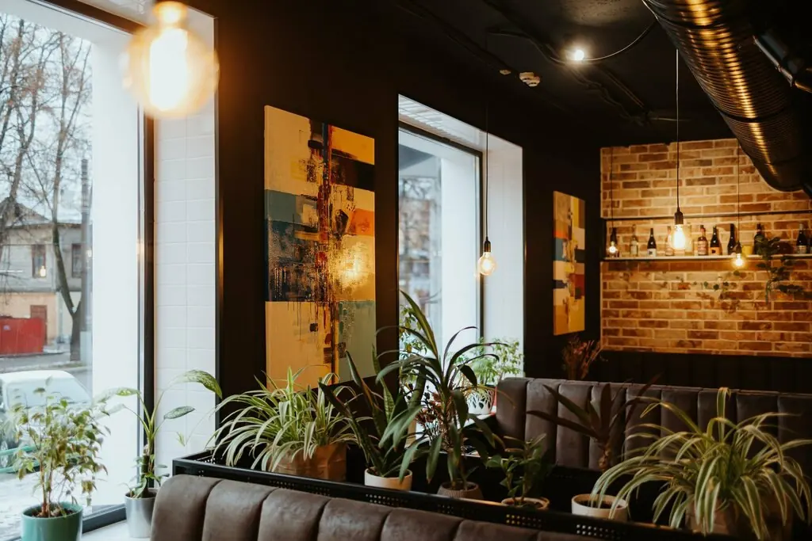
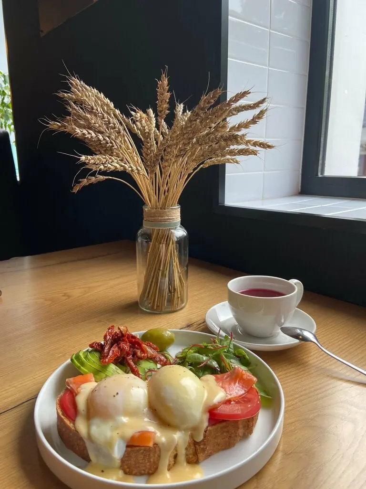
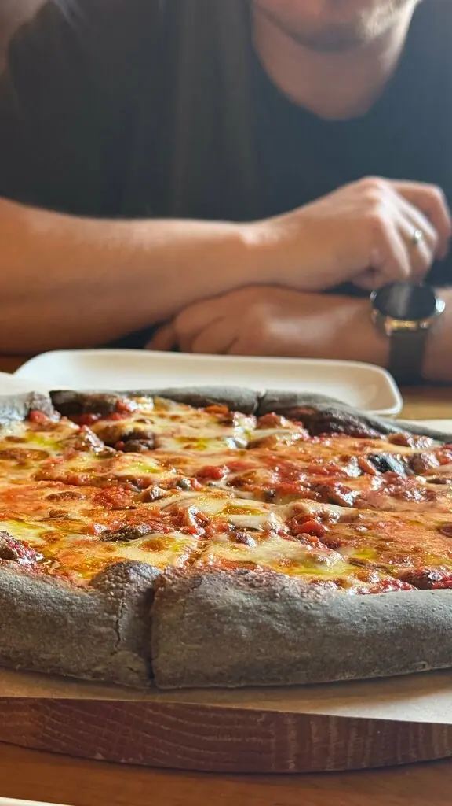
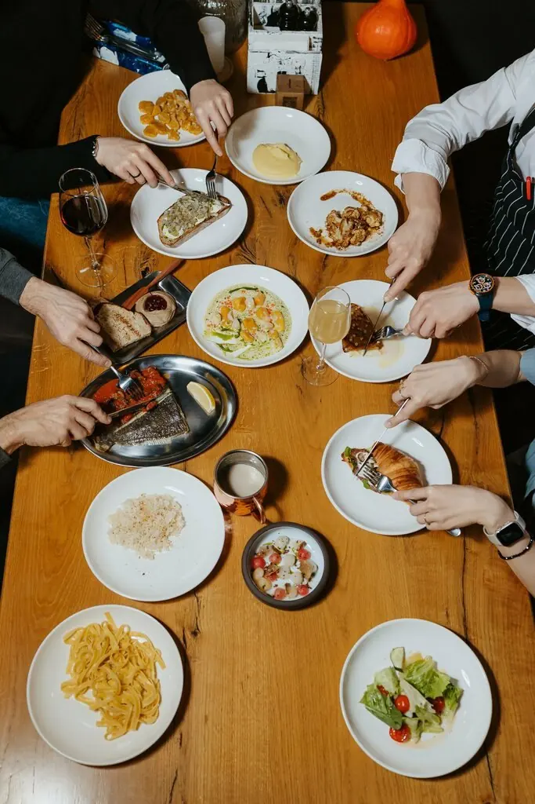
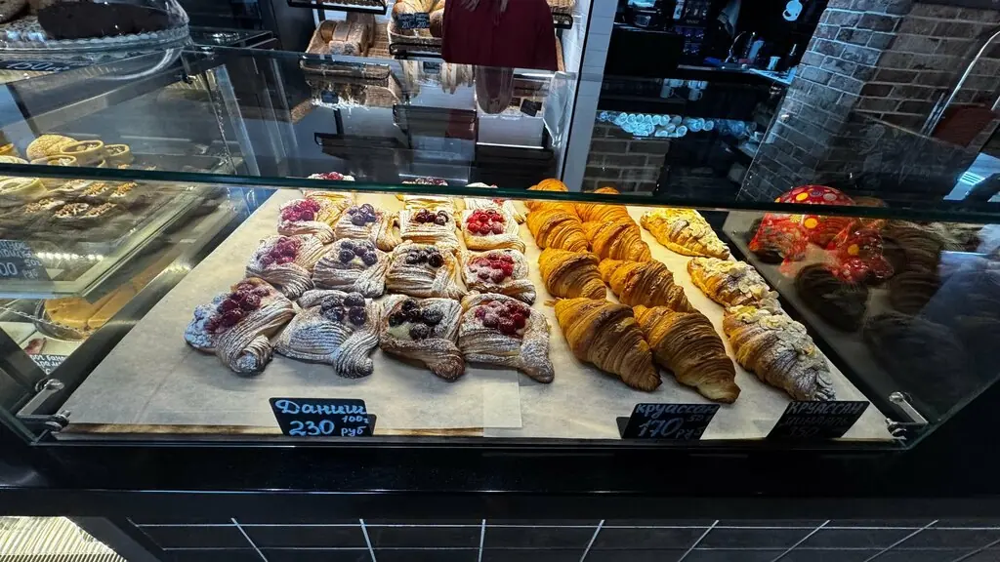

Киров+7 8332 20-62-14
Траттория для друзей
ОляКуда идём завтра?
КостяТолько там, где правда вкусные завтраки
Траттория на Красноармейской, 5. Там всего 20 мест, давайте заранее
ОляТы бронируешь 👍
5,0 · 1052 оценки

Что заказать на всех
Деревенский завтрак450 ₽
Круассан с форелью460 ₽
Зелёный боул500 ₽
Наполеон250 ₽
Комбо 3 пиццы1 985 ₽
Комбо 5 пицц3 025 ₽
Часть меню с Яндекс Карт, цены уточняйте у официанта.




Пересланные сообщения
Самые вкусные завтраки Кирова, приветливый персонал, атмосфера заведения изумительная.Александр Смирнов
Заходил накануне попить кофе и взял десерт Наполеон. Кофе вкусный, а Наполеон ваще огонь.Ванчестер (Чагин Иван)
Чистый приятный интерьер, вкусная пицца. Отличное место для посещения дружной компанией.Татьяна